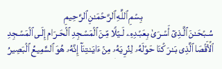

Moqawama . Islamic . Arabic . Scholars . Poems . Library . Kids . Index

The Beloved Land "FALESTINE"
The Flower of Cities "AL-QUDS"
The Holy Mosque "AL-AQSA"

See and Read Some Facts About Palestine, al-Quds and al-Aqsa
Moqawama . Islamic . Arabic . Scholars . Poems . Library . Kids . Index